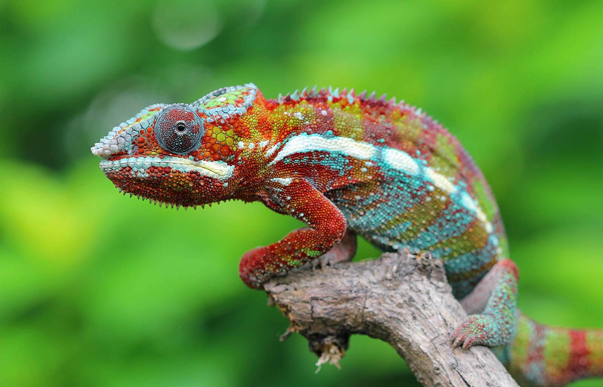
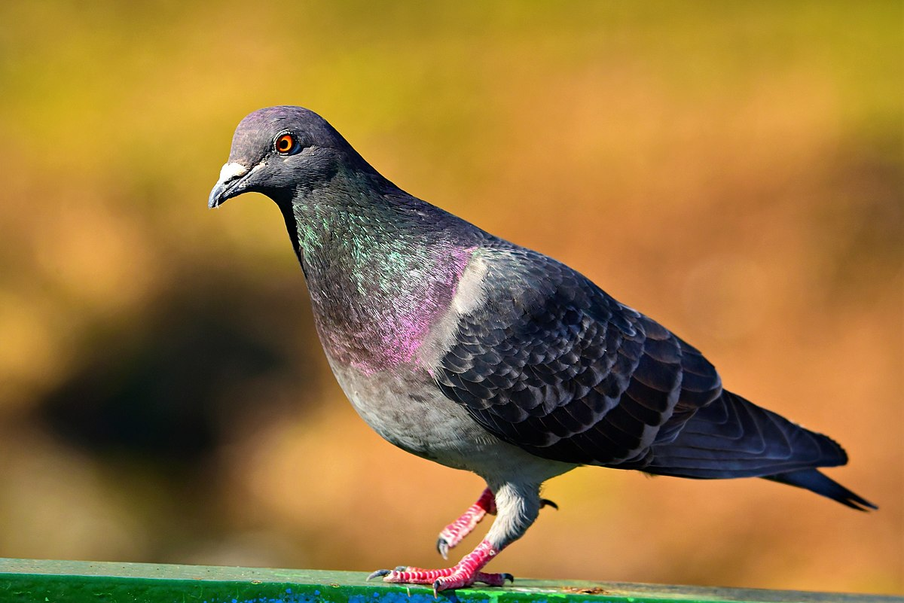

ALL ABOUT ANIMALS

Humans have used camels for their wool, milk, meat, leather, and even dung, which can be used for fuel.
The dromedary camel, also known as the Arabian camel, exists today only as a domesticated animal.
About 90 percent of the world's camels are dromedarie.
Their humps let them store up to 80 pounds of fat which they can live off for weeks and even months!
When a camel finally does find water, he can drink up to 40 gallons in one go.
Camels are very strong and can carry up to 900 pounds for 25 miles a day.
Camels can travel at up to 40 miles per hour – the same as a racehorse!

Chameleons or chamaeleons (family Chamaeleonidae) are a distinctive and highly specialized clade of Old World lizards with 202 species described as of June 2015.
These species come in a range of colors, and many species have the ability to change color.
Chameleons are distinguished by their zygodactylous feet; their swaying gait;[2and crests or horns on their brow and snout.
Most species, the larger ones in particular, also have a prehensile tail.
Chameleons' eyes are independently mobile, but in aiming at a prey item, they focus forward in coordination, affording the animal stereoscopic vision.
They live in warm habitats that range from rainforest to desert conditions, with various species occurring in Africa,Madagascar, southern Europe, and across southern Asia as far as Sri Lanka.
They have been introduced to Hawaii, California, and Florida.

Columbidae is a bird family consisting of pigeons and doves.
is the only family in the order Columbiformes.
These are stout-bodied birds with short necks, and short slender bills that in some species feature fleshy ceres.
They primarily feed on seeds, fruits, and plants.
The average life span for an adult Mourning Dove is 1.5 years.
The oldest known free-living bird, discovered through bird banding research, was over 31 years old.
This is the record life span for a North American bird that lives on land.
The tiger is the largest living cat species and a member of the genus Panthera.
It is most recognisable for its dark vertical stripes on orange-brown fur with a lighter underside.
It is an apex predator, primarily preying on ungulates such as deer and wild boar.
The average lifespan of a tiger in the wild is about 11 years.
In captivity their lifespan is about 20 to 25 years.
Tigers are the largest cat species in the world.
Amur tigers (sometimes called Siberian tigers) are the biggest tigers, with males weighing up to 660 pounds and measuring up to 10 feet long from nose to tip of the tail.
Sumatran tigers are the smallest of the tiger subspecies, maxing out at about 310 pounds and 8 feet.
The wolf, also known as the gray wolf or grey wolf, is a large canine native to Eurasia and North America.
More than thirty subspecies of Canis lupus have been recognized, and gray wolves, as colloquially understood, comprise non-domestic/feral subspecies.
Speed: 50 – 60 km/h (Running)
Scientific name: Canis lupus
Height: 80 – 85 cm (Adult, At Shoulder)
Lifespan: Female: 14 years (In the wild)
level: Carnivorous Encyclopedia of Life
Mass: Male: 30 – 80 kg (Adult), Female: 23 – 55 kg (Adult)